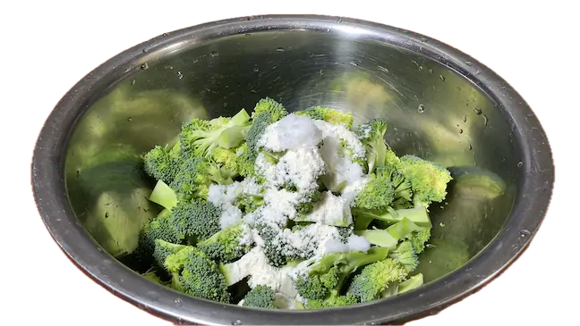
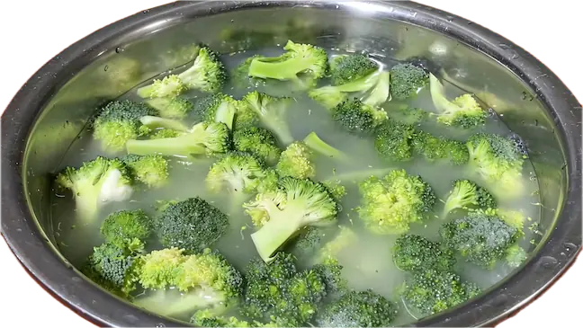
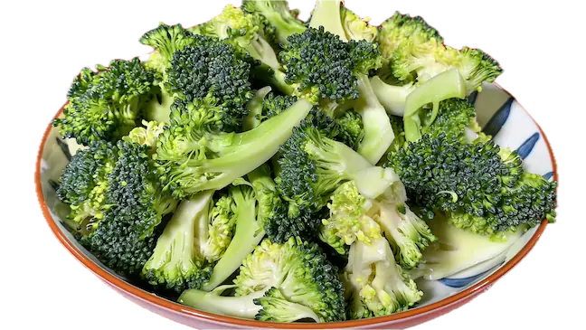
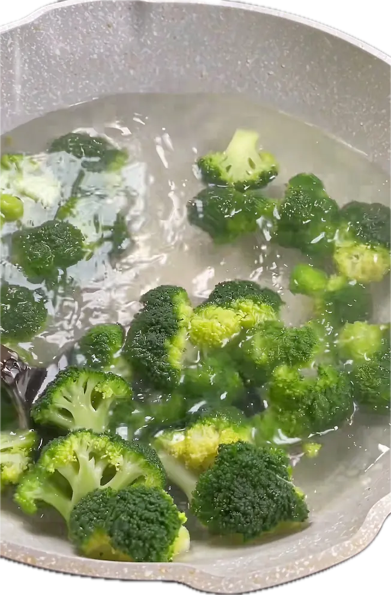

热量低（约34千卡/100g），纤维足，维C、维K、叶酸含量不错，还含萝卜硫素这类抗氧化物质。
挑选
花苞紧闭、紧实饱满，颜色浓绿鲜亮；梗的切口干爽不干枯，小叶子翠绿抒展。烹饪
清香脆嫩，可以清炒、白灼。
处理
- 花球切成大小均匀的块；
- 菜梗切片、切丝等，切成容易煮熟的形状；
- 把切好的西兰花翻入盆中，加入适量盐、面粉、水抓拌均匀，浸泡15分钟；
面粉有很好的吸附性，配合盐水，很好的去出杂志、虫卵； - 浸泡好了后，抓拌抓拌，轻轻搓一搓花簇，捞出后，反复换水继续清洗干净，沥干水捞出；
- 起锅烧开水，加入适量盐、油，倒入西兰花，保持水开，焯水15秒左右，控干水，捞出备用。



